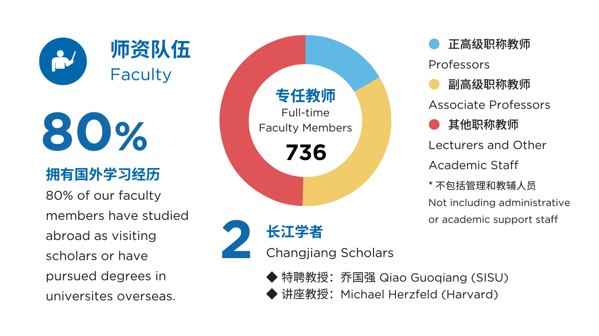

师资队伍
 师资队伍建设是学校发展的关键，教师发展就是学校发展，高素质教师队伍是学校发展最重要的资源，是学校提升核心竞争力的源泉。近年来，上海外国语大学持续优化教师队伍结构，引才与育才并举，积极服务教师发展，提升师资队伍水平。
高层次人才项目实现多个突破。基本形成人才队伍的引进与培养有机结合的机制；以高端引领，骨干率先，打造了一支结构合理、素质优良的人才队伍。近两年来，在高层次人才队伍建设中实现了多个人才项目零的突破；如成功申报“长江学者奖励计划”特聘教授1 人、讲座教授2 人，教育部“跨世纪人才”1人、入选“教育部新世纪优秀人才支持计划”17 人等；学校目前享受国务院政府特殊津贴人数为57 人。
稳步推进各类高层次人才引进，不断加大非语言类等复合型人才的引进力度。学校引进了领军人才、学科带头人、学术骨干、优秀青年教师及特聘教授，为不同层次的引进人才提供相应的住房补贴及科研项目资助经费。同时，学校也不断加强对优秀留学回国人员的引进力度，并参照优秀青年教师的标准为其提供相应的引进津贴。、 实施“青年教师教学科研团队培育计划”。
创新师资培养模式，打造上外“青椒雁队”（“青年教师教学科研团队培育计划”）。“青椒雁队”自2011年3月启动以来，已经成功举办了两届，共建成教学培育团队69支，科研团队37支，科研和教学成果硕果累累，获得各类奖项达49项。第三届培育团队也已于2016年5月正式启动。“青椒雁队”在队伍打造、学科交叉、项目攻坚、成果创新上取得了引人注目的成绩，并于2013年成功入选教育部教师队伍建设示范项目。
实施“青年英才海外研修计划”。积极打造教师国际交流合作平台，近5年来，以国家战略和学校发展需求为导向，对接教育部、国家留学基金委、上海市教委的要求，结合教师职业发展需求，学校共派出1396名教师参与各类长短期出国项目，开展交流访问、参加学术会议、合作研究等工作，全力支持教学科研及管理人员与国外著名高校和科研机构开展交流与合作。
教师发展中心提供四大服务职能。2012年，学校成立了教师发展中心（2014年10月起挂靠人事处），以为教师职业发展提供服务和帮助为目标，聚焦专业培训、交流研讨、咨询服务、资助计划四大模块开展工作。
为教师发展提供多元化支持。已经形成岗前培训、岗中培训、出国研修和团队建设为一体的培养体系，教师队伍的知识结构、学历层次和综合素质不断提升。教职工结构上，着重向专业技术岗位人员录用与引进倾斜，抓好管理岗位人员数量控制，工勤岗位基本不新增，实现了队伍结构的合理配置；校内人才梯队不断完善，教职工学历层次不断提升，生师比不断优化；截至2016年4月，学校共有专任教师736人，其中教授132人，占专任教师总数的18%；具有博士学位者478 人，占专任教师总数的64%。
探索实施专任教师分类管理、分类评价制度。为了促进人才培养，建设结构合理、特色突出的高水平、国际化的师资队伍，学校职称评审的布局根据各个时期的特点和学校发展的需求进行了深层次的阶梯性的调整，试行了教学型高级职称的评审，不断完善学校专业技术职务评聘制度，推进各学科整体提升。